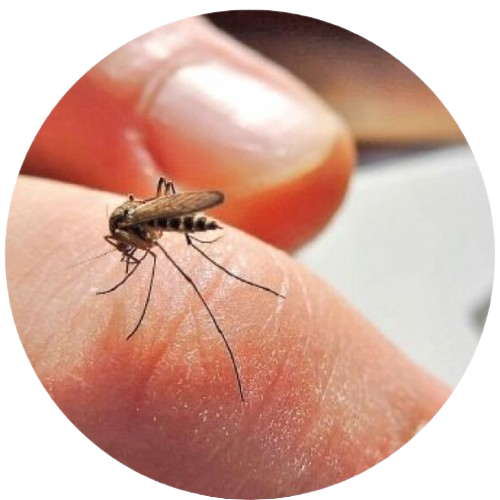
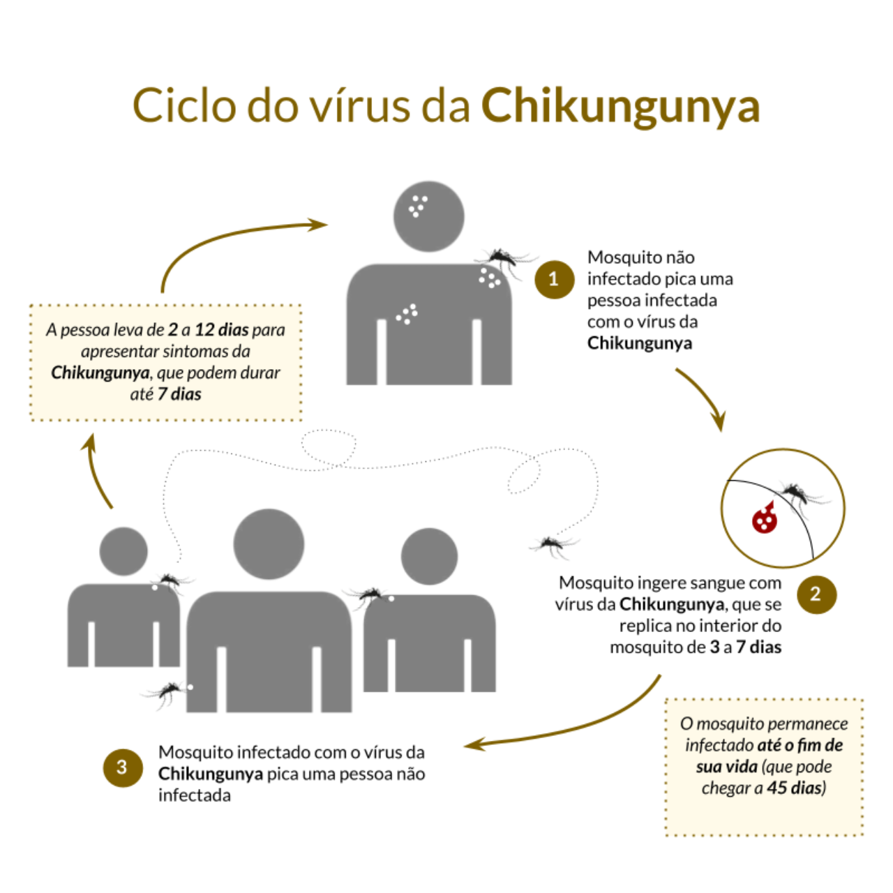
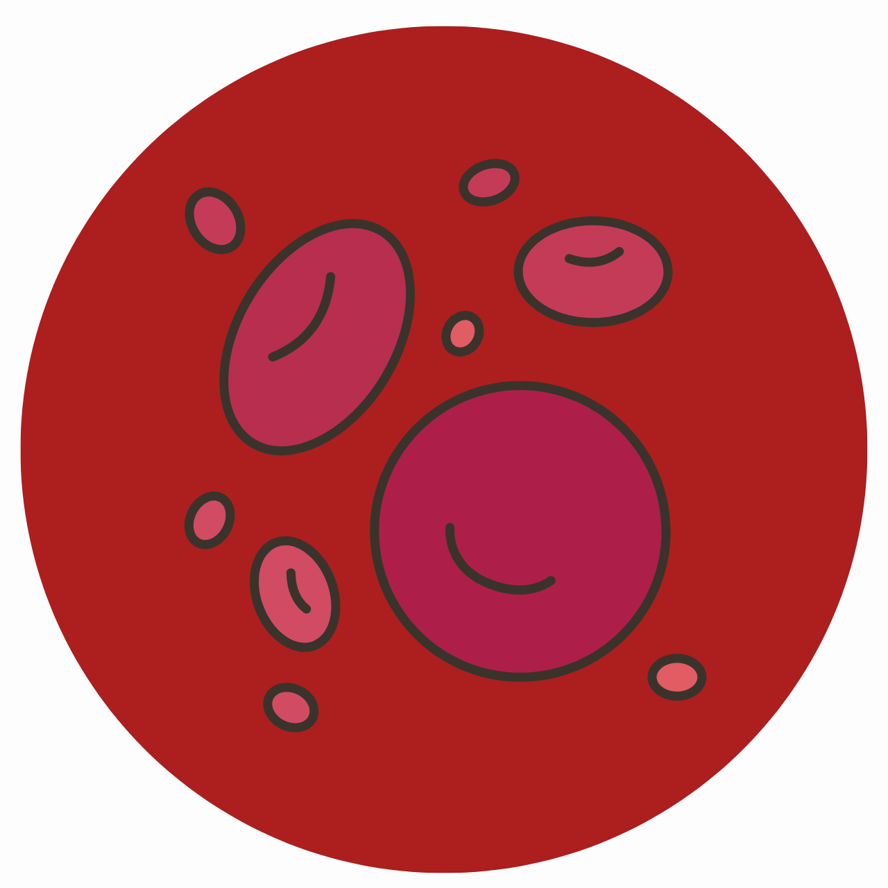
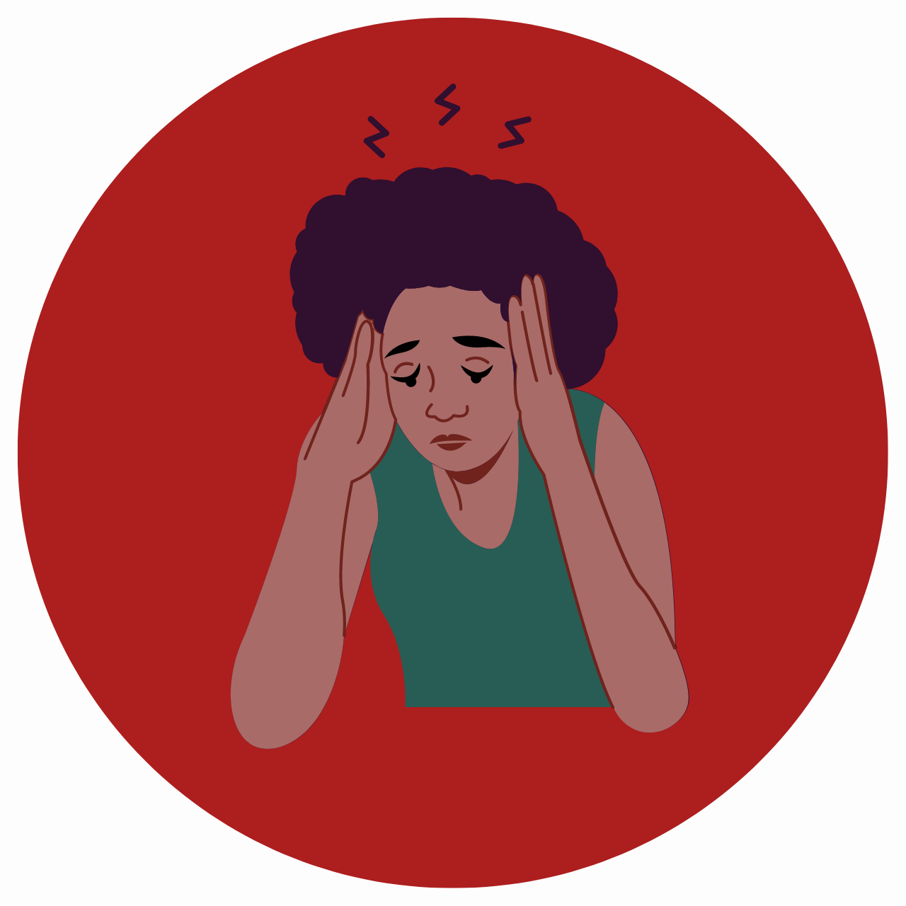
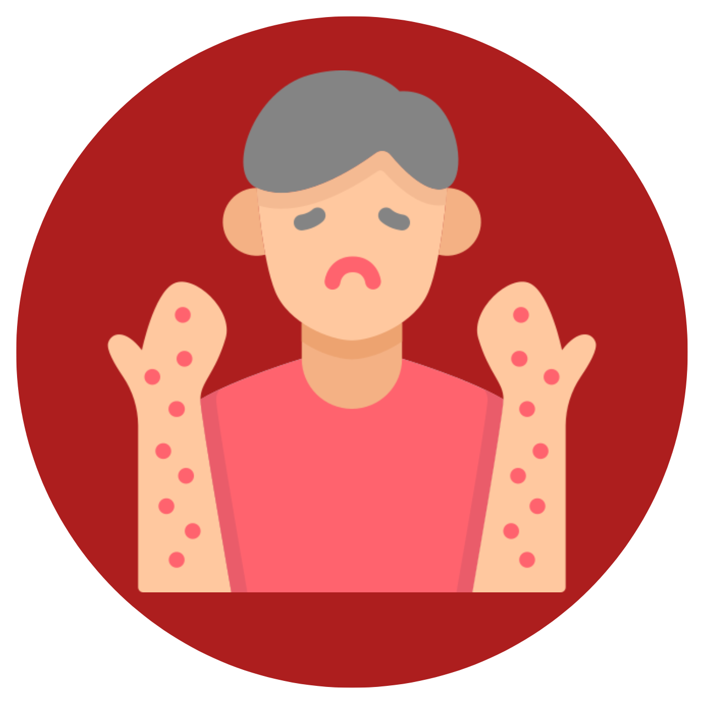
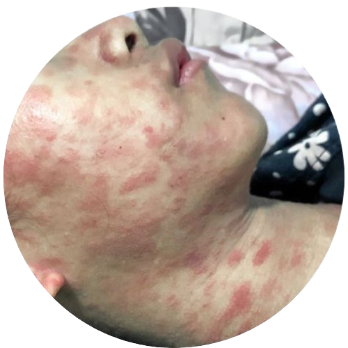
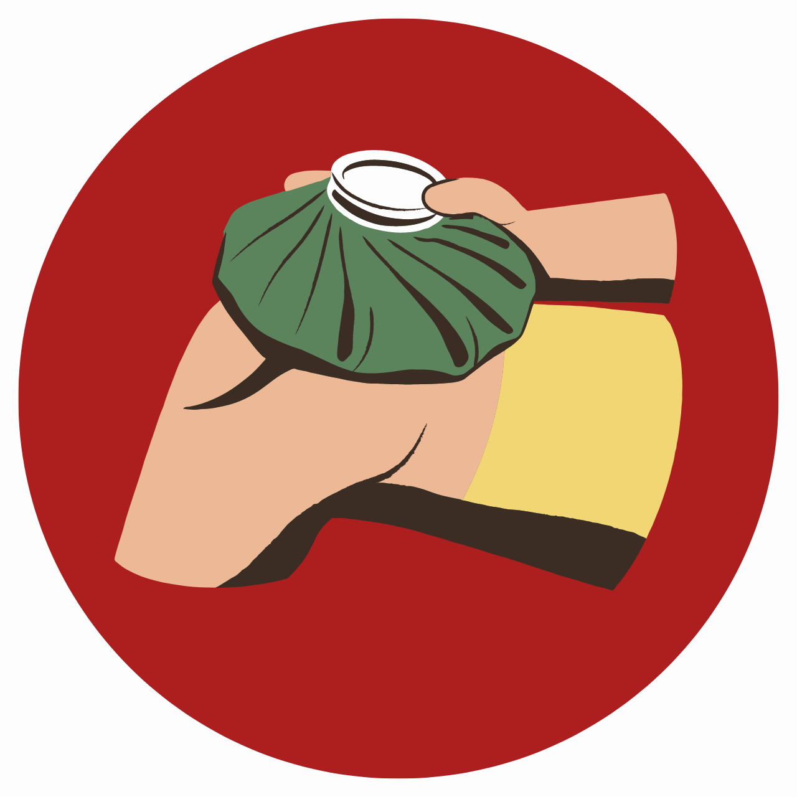
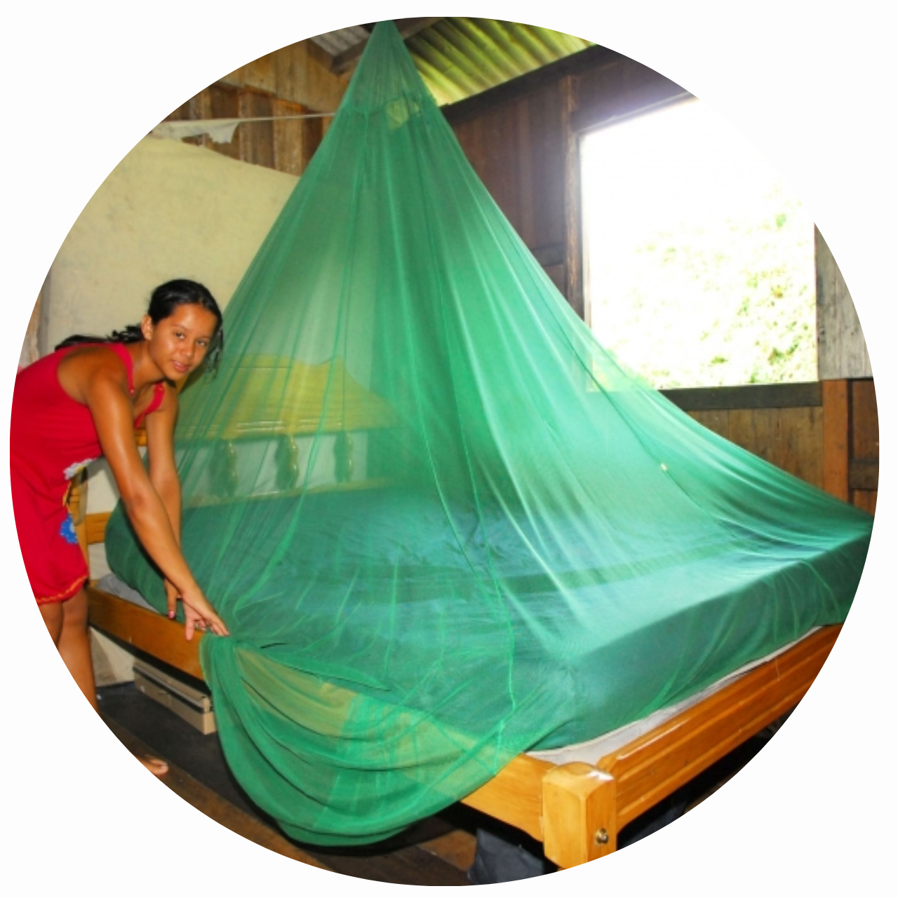
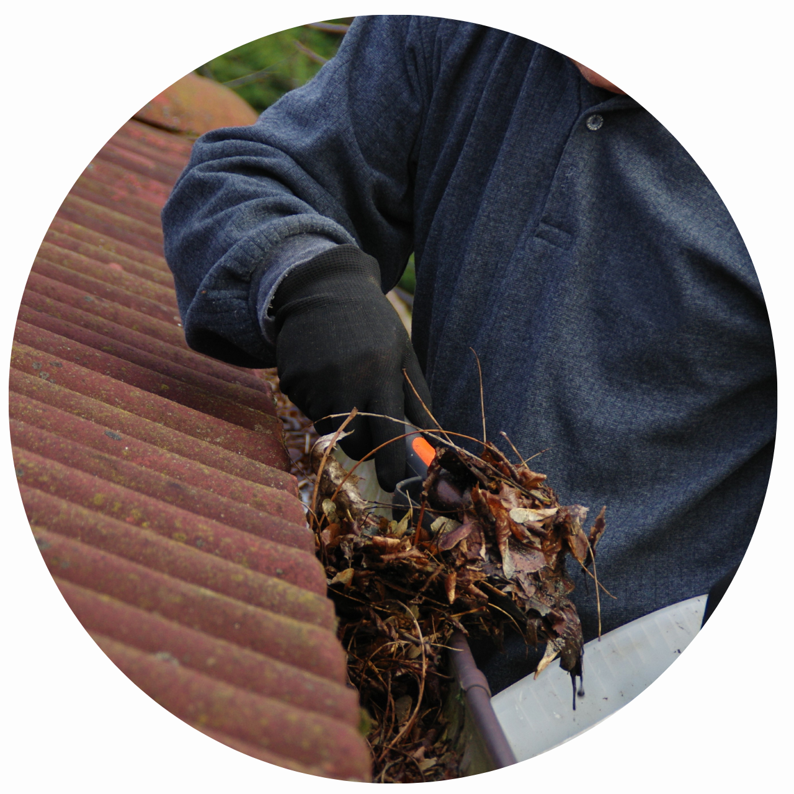

A chikungunya é uma arbovirose (doença causada por vírus) que está presente em aproximadamente 115 países, especialmente em regiões tropicais e subtropicais.
Uma das principais preocupações reside na possibilidade de transmissão do vírus da mãe para o filho durante o parto, pois grande parte dessas situações resulta em complicações neurológicas significativas para a criança.
O vírus da chikungunya foi inicialmente identificado em 1952 durante um surto na Tanzânia, na
região de Chikungunya, daí o nome da doença.
Expansão
Desde sua descoberta, o vírus da doença se espalhou para várias partes do mundo, incluindo
América Central e do Sul, Caribe, África, Ásia e algumas ilhas do Oceano Índico.
Além disso...
Ainda não existe vacina disponível para prevenir a chikungunya.
Fonte: Canva
Vetor da doença
Aedes aegypti
Reino: Animalia Filo: Arthropoda Classe: Insecta Ordem: Diptera Família: Culicidae Gênero: Aedes Espécie: Aedes aegypti
Sobre ele:
O Aedes aegypti é conhecido por ser um vetor de várias doenças, incluindo a
dengue, a febre amarela, a chikungunya e o vírus Zika. Essas doenças representam
um sério problema de saúde pública em várias regiões tropicais e subtropicais do mundo.
O Aedes albopictus, também conhecido como mosquito-tigre, é outro
mosquito importante em termos de saúde pública. Essa espécie, assim
como o Aedes aegypti, são considerados vetores importantes dessas doenças,
pois se alimentam de sangue humano

Fonte:Shuterstock
Transmissão
Importante ressaltar que a chikungunya não é transmitida de pessoa para pessoa de forma direta,
ou seja, não há transmissão através de aperto de mãos e abraços. Connheça as formas de transmissão:
Através do vetor
A principal forma de transmissão é através da picada de mosquitos infectados com o vírus CHIKV.
Transmissão vertical
A mãe infectada pode transmitir o vírus ao feto durante a gravidez ou
durante o parto.
Transmissão sanguínea
Pode ocorrer se o sangue do doador estiver infectado.

Fonte:Milenne Souza de Lima / CIEVS/RS
Ciclo da doença
Mosquitos infectados
O ciclo começa quando os mosquitos do gênero Aedes se infectam com o vírus da chikungunya
ao se alimentarem de uma pessoa infectada (durante a fase aguda).
Reprodução do vírus
O vírus se multiplica dentro do mosquito infectado, e esse vírus se
estabelece, primeiramente, no intestino do mosquito e em seguida vai
para as glândulas salivares.

Picada do mosquito
Após um período de incubação, o mosquito infectado começa está pronto para
transmitir o vírus. Quando o mosquito pica uma pessoa saudável, o vírus é injetado
na corrente sanguínea dela através da saliva do mosquito.
Disseminação
Se a pessoa, durante a fase aguda da doença, for picada por mosquitos
saudáveis, o vírus pode ser transmitido para esses mosquitos.
Sintomas da chikungunya
Os sintomas da chikungunya são semelhantes aos da dengue e da Zika, conheça-os:
Febre igual ou acima de 38°C
A pessoa infectada apresenta a febre de forma repentina.

Dores de cabeça
As dores podem variar a gravidade, entre dores leves a graves.
Dores nas articulações
Principal característica da doença. As dores afetam
as articulações das mãos, punhos, tornozelos e pés.

Erupção cutânea
São compostas por manchas vermelhas elevadas e planas. Aparecem no tronco e extremidades.
Sensação de mal estar
Que pode ser acompanhada por náuseas, vômitos e calafrios.
Dor abdominal
Também pode ser acompanhada por diarreia. São mais comuns em crianças.

Fonte: Jornal do Médico
Tratamento
Ainda não existe um tratamento específico para a chikungunya. Porém, existem medidas que
são adotadas no tratamento, como:
Repouso e hidratação adequada
É ideial descansar bastante e beber líquidos em abundância para prevenir a desidratação.
Alívio da dor e febre
São utilizados alguns medicamentos para reduzir a febre e aliviar a dor nas
articulações e nos músculos.

Tratamento dos sintomas nas articulações
Para aliviar a dor e inflamação nas articulações, são utilizadas compressas frias ou
quentes, repouso ou fisioterapia. Em casos mais graves, o médico pode prescrever
medicamentos anti-inflamatórios.
Medidas profiláticas
Algumas ações que incluem o controle da população dos vetores ou a contaminação da doença são:
1
Eliminar focos de água parada
2
Redução de criadouros de mosquitos
3
Uso de repelentes
4
Uso de roupas protetoras
5
Manter janelas com telas de proteção

6
Usar mosquiteiros em berços e camas
7
Aplicar larvicidas em possíveis criadouros

8
Remover folhas que atrapalham o escoamento da água